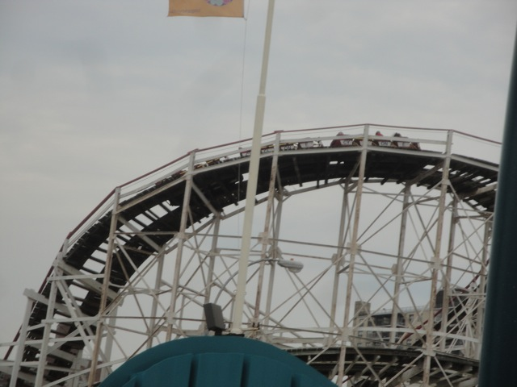
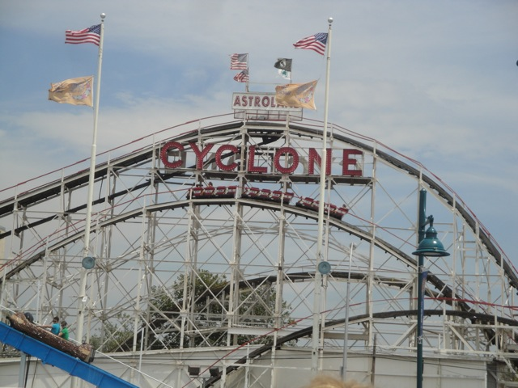
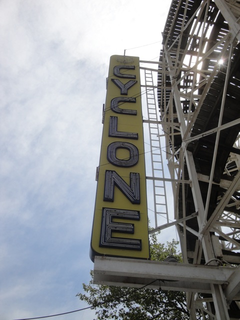
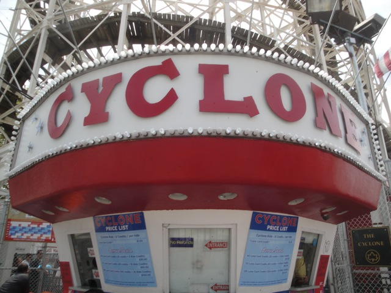

| |
Cyclone Review

We're here at Coney Island. Today's ride we'll be reviewing for you is perhaps the most famous roller coaster ever made. Yep, that's right. Today we're going to be reviewing the world famous Coney Island Cyclone. Still standing from 1927, this classic has been around the block several different times. It withstood the Great Depression and maintained its fame, starring in several movies such as The Warriors and Shakedown, Grand Theft Auto IV, its placed under the National Register of Historic Places, and its been replicated time and time again. While not exact clones, those replications can greatly range from being great rides to horrible rides. But how about the original? Does the classic Coney Island Cyclone live up to it's height and provide a crazy out of control ride like its great clones? Or does it beat the living sh*t out of you like its horrible clones? Well, let's pull down our lap bars, and ride to find out for ourselves. We roll around a turn and start climbing the lifthill. The lifthill gives us a good view of Coney Island and the beaches right by the Atlantic Ocean. But enough is enough. Lets get to the top and see just how this ride has held up since 1927. We head down the first drop. This is great!!! Nice airtime!! I love it!!! And then we get to the bottom. There's some serious shuffling going on, but hey. No big deal. We then rise up and head into the turnaround. It's a smooth turnaround. Despite that bit of jackhammering at the bottom, this is proving to be a really great ride. We drop back down and head up into a hill. There's not too much airtime here, but its still pretty good. Plus, if you're sitting in the back, you're gonna get some airtime as you get yanked down to the ground. There's more jackhammering at the bottom of this trip, so those especially sensitive to roughness aren't gonna like this. But come on. It's padded. This isn't that bad. We rise up into a turnaround. We get a nice little bit of laterals here, but its not too crazy as we do slow down and head straight towards the drop back down. This is where the ride really starts to get good (at least in the back). You get some great ejector airtime heading down that drop. That's the great news. The bad news is that it's really shuffling and jackhammering at the bottom right here. But who cares!!! We rise up over another airtime hill and trust me. This one really delivers. Right before dropping back down into more jackhammering. Yeah, I see a pattern forming right here. We then head up a small hill into a turnaround. This provides us with some good laterals. There's also some really nice headchoppers here as well. So that's another good thing. We drop on out of the wooden mess into more jackhammering. The pattern continues. Airtime hill, wee!!! Floating out of our seats. Fall back into our seats. Shake shake shake. We roar through a tiny little hill. Not much in airtime here. Just swallow the puny hill hole for the sake of it not being straight track. And it's that time again. Time to rise up slightly, go underneath the ride structure, and get more laterals as we embrace yet another turnaround. We then drop down and roar through this teeny tiny hill that provides more laterals than airtime. And that's just before heading into a more traditional hill for more airtime and more jackhammering at the bottom. We rise up, go through a turn, get more crazy laterals right before heading down and rising up into another hill. And from here, we just head into the brake run. The brake run is slightly curved, so there's a little bit of laterals, but not much since we are slowing down afterwards. So is it a crazy good ride or is it just rough as hell and should be discarded immidietly? The answer? Honestly, I'd say both. Ok, if I had to pick one or the other, I'd pick great ride as this is a really good ride. It's still got some great airtime, good laterals, and just overall craziness. I won't lie. This ride does also have a lot of jackhammering, but you can tell that Coney Island is taking care of and preserving this ride. So absolutely ride this ride when you're at Coney Island. It's fun, its crazy, and it's the most famous roller coaster ever built. Come on now. You wouldn't turn down the most famous roller coaster in the world. Would you? =(
8/10
Location: Coney Island
Opened: 1927
Built by: Harry Baker
Last Ridden: July 28, 2011
Cyclone Photos




Home
|